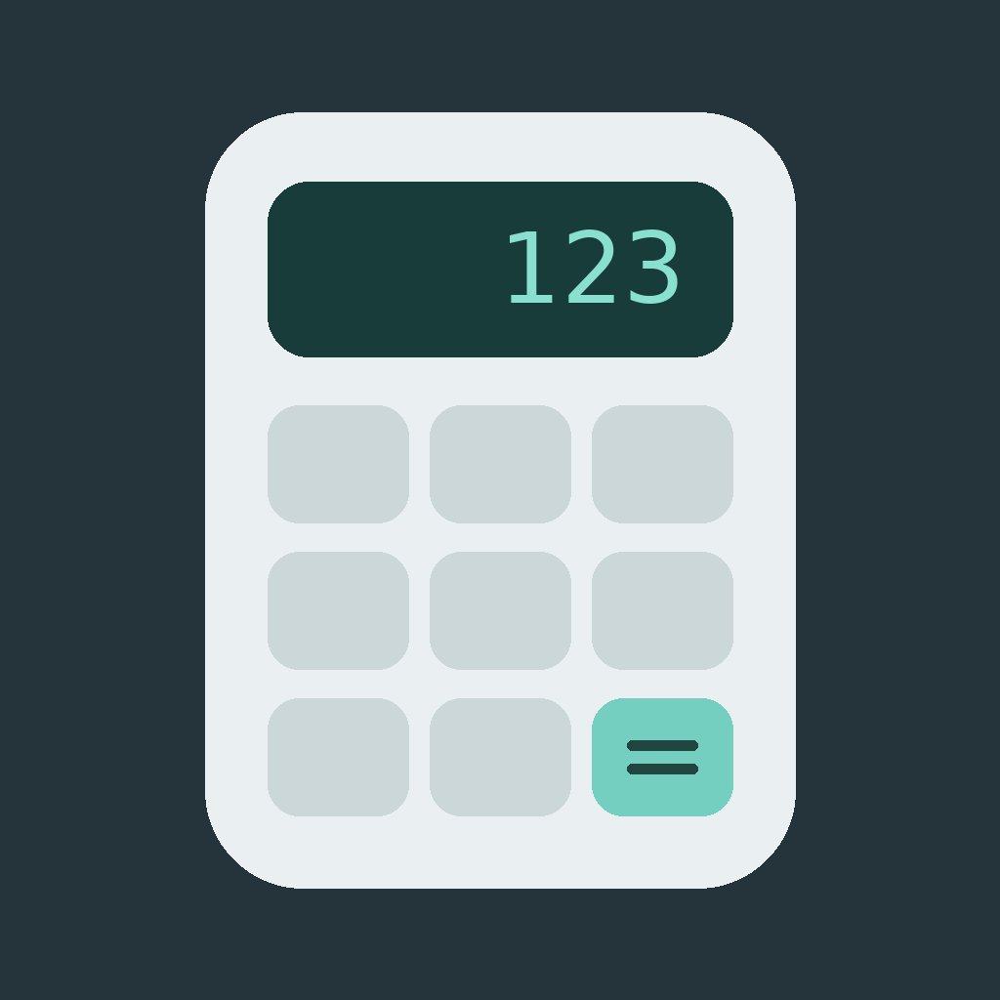

▧
SwiftPix
Fotók, videók és privát médiatár egy letisztult galériában.
App Store-megjelenés előkészítéseAdatvédelem →Átgondolt, szerethető iPhone-alkalmazások. Egyszerű használat, gondos kidolgozás – by Árszi.
Alkalmazások felfedezéseFotók, videók és privát médiatár egy letisztult galériában.
App Store-megjelenés előkészítéseAdatvédelem →Internetes rádióhallgatás kényelmes vezérléssel.
Fejlesztés alattHangjelzések és értesítési élmények.
Fejlesztés alattAdatvédelem →Szolgálati beosztások áttekinthető naptára.
Fejlesztés alattAdatvédelem →Intelligens tárcsázó és névjegykezelő T9 kereséssel, névjegycsoportokkal, 12 egyedi témával és 18 nyelven.
App Store-megjelenés előkészítéseAdatvédelem →Támogatás →
Normál és tudományos számológép iPhone-ra és iPadre, 13 segédkalkulátorral, 16 témával és 12 nyelven. Ingyenes, reklámok nélkül.
App Store-megjelenés előkészítéseBemutatkozás →Adatvédelem →Támogatás →Az alkalmazásokat fokozatosan készítjük elő a nyilvános megjelenésre. A weboldalon megjelenő alkalmazások nem feltétlenül érhetők még el az App Store-ban.